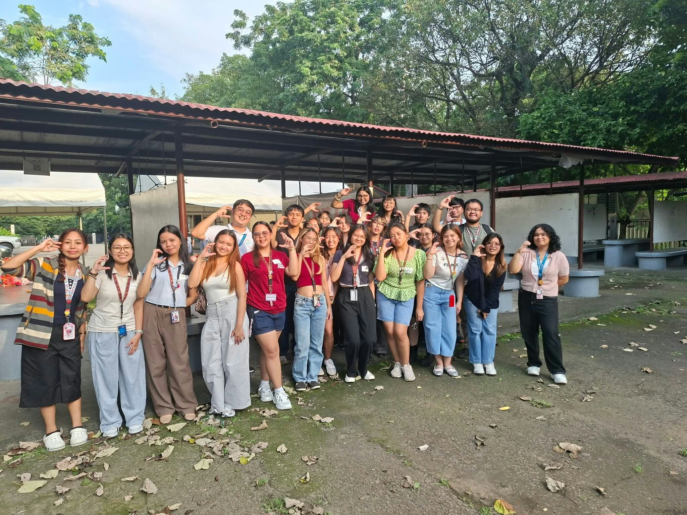
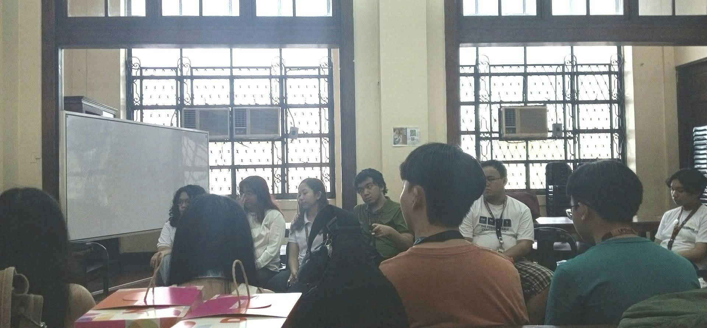
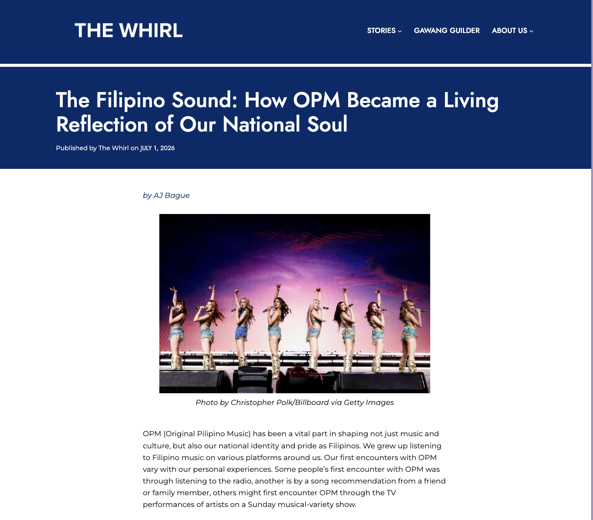
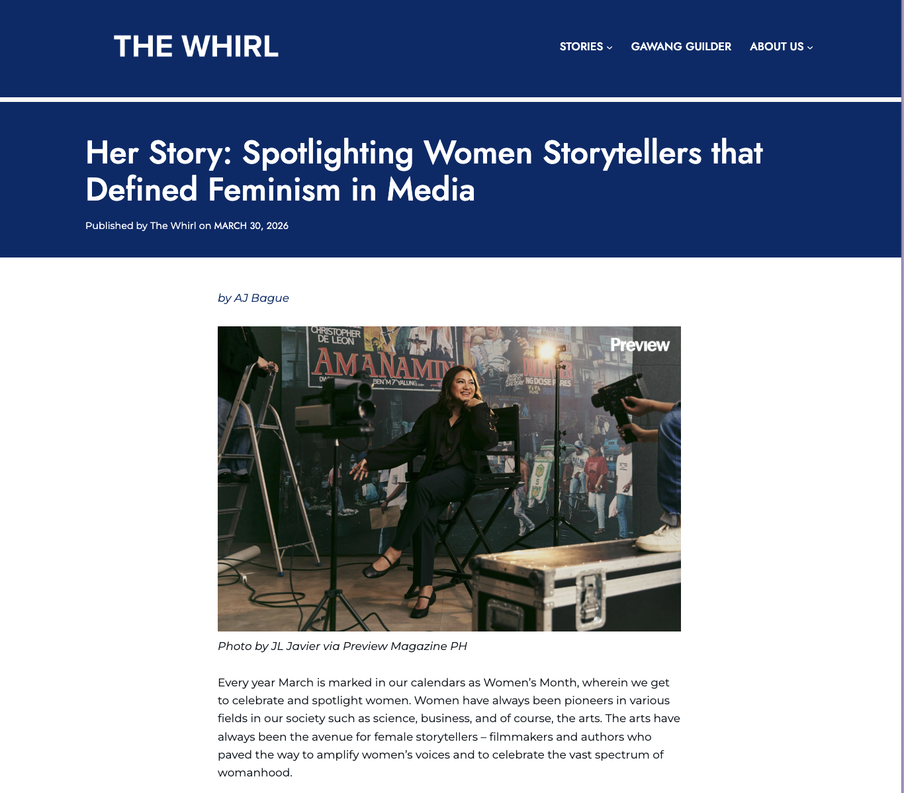

Mental Health Advocacy
I engage myself in communities teaching and advocating about Mental Health. I teach about self-care, community advocacy, and wellness to other people through local and student organizations across Metro Manila. The way that I advocate about Mental Health is by helping in the facilitating of Mental Health Trainings, Membership Check-ins, and Indivual and Group De-stressing activities.


Culture Writing
I write contents online regarding spaces related to culture, lifestyle, art, and recently fashion. One of my main and recent article works were uploaded on The Whirl, a student-led publication in a media organization based in UP Diliman. My favorite published pieces are about an article celebrating women storytellers (film, broadcast, and literature) during Women's Month 2026 and a culture article talking about the rise of OPM globally. Especially, on how it has become a reflection of our Filipino Soul.

